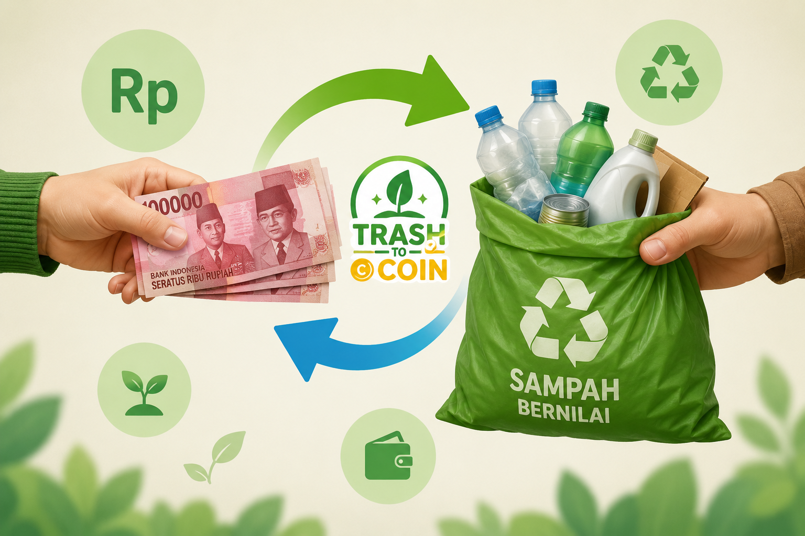

Aksi nyata warga negara yang cerdas. Pilah sampah dari rumah, kumpulkan koin digitalnya, dan tukarkan langsung menjadi uang tunai atau saldo e-wallet.
Mulai Tukar Sekarang
Bukan cuma soal membuang, ini tentang bagaimana kita sebagai warga negara mengambil peran kecil untuk dampak yang besar.
Setiap botol yang kamu pilah berarti berkurangnya racun di tanah kita, menghemat energi produksi hingga 90%, dan menjaga kelangsungan makhluk hidup di sekitar kita.
Kami mengubah limbah yang kamu setor menjadi produk bernilai guna tinggi, seperti paving block premium tahan lama dan Notebook kertas daur ulang berkualitas untuk menghidupkan ekosistem lokal.
Pilah sampahmu dari rumah sesuai kategori di bawah ini untuk mendapatkan koin optimal.
Botol air mineral, botol jus, dan wadah plastik bening sejenisnya.
⭐ 500 Koin / KgBotol shampoo, sabun cair, detergen, jeriken, dan tutup botol tebal.
⭐ 540 Koin / KgKotak pengiriman paket online, kardus mi instan, dan sejenisnya.
⭐ 460 Koin / KgKoran bekas, majalah, buku tulis lama, dan tumpukan kertas HVS.
⭐ 430 Koin / KgPisahkan sampah anorganik botol plastik atau kertas berdasarkan jenis tipenya.
Cari lokasi penukaran terdekat di peta, lalu serahkan sampahmu ke petugas kami.
Scan QR Code di Drop Point. Petugas akan memverifikasi berat dan jenis sampahmu.
Koin digital otomatis masuk ke akunmu dan siap dikonversi menjadi uang rupiah.